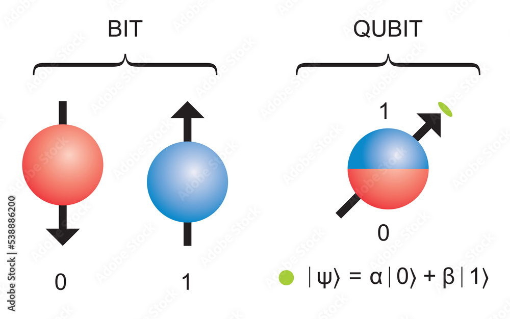
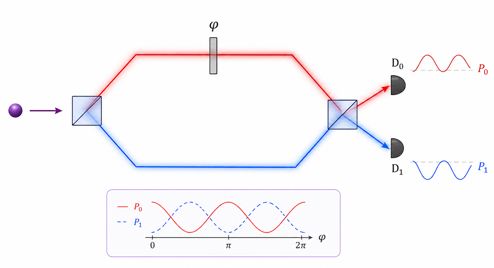

L'ordinateur quantique
Informations :
L'ordinateur quantique est aussi complexe que fascinant, il est depuis quelques années, caché derrière les gros enjeux de l'informatique tels que l'intelligence artificielle ou les nouveaux équipements informatiques qui arrivent sur le marché. L'ordinateur quantique est maintenant devenu une signature invisible au sein des équipements et des logiciels informatiques notamment ceux du gouvernement des Etats-Unis.
Pour comprendre le principe de l'ordinateur quantique, il faut comprendre le principe d'un ordinateur classique et le principe de base de la physique quantique. Tout d'abord un ordinateur classique fonctionne avec des bits, qui peuvent prendre deux états afin de faire des opérations pour répondre à un problème donné. Cela fonctionne avec des courants électriques qui sont gérés par des transistors. La différence principale entre cette structure binaire et celle de la physique quantique, est l'état de la nature énergétique : l'ordinateur classique peut prendre deux états différents, 0 ou 1, alors que l'ordinateur quantique peut prendre plusieurs états différents en même temps.


Avec la superposition quantique, on peut représenter tous les éléments d'un calcul en même temps. Lorsque l'on cherche un certain résultat, on doit modifier la probabilité de tomber dessus. Lorsque que l'ordinateur va prendre le q-bit, il aura une probabilité de tomber sur le bon résultat drastiquement plus élevé et beaucoup plus rapidement. Cependant toutes les opérations que fait un ordinateur classique sont optimisées comme l'affichage d'images. C'est la raison pour laquelle il n'y a pas d'interface graphique sur un ordinateur quantique et qu'il faut écrire le code sur un ordinateur classique avant de l'importer sur un ordinateur quantique.
Cependant, nous ne sommes qu'au début de l'ère de l'informatique quantique. En effet, plusieurs contraintes font obstacle à la recherche et au progrès : les q-bits sont sensibles, c'est pourquoi il faut une très grosse structure pour faire fonctionner les ordinateurs quantiques. Le nombre de q-bits sur un ordinateur quantique actuel est faible, ce qui ralentit considérablement l'évolution globale de cette technologie.
Sources :
- V2F, "L'ordinateur quantique, c'est simple, en fait.", Youtube.
- Wikipedia, "Ordinateur quantique", Wikipedia.
- Underscore_, "Pourquoi un ordi quantique va plus vite ?", Youtube.
- Projet-labo, "Les 7 principes de la physique quantique expliqués simplement et efficacement", Projet-labo.
- Quantumworld
- Google News
- usine-digital
- lesnumeriques
Newsletter :